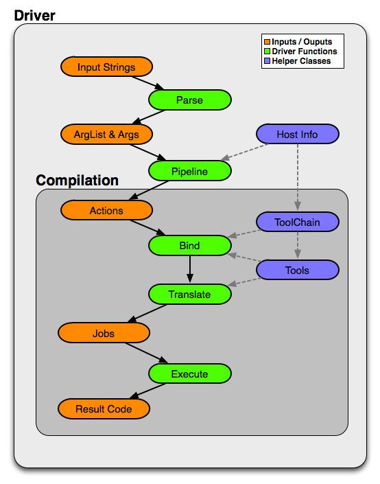

Driver Design & Internals¶
Introduction¶
This document describes the Clang driver. The purpose of this document is to describe both the motivation and design goals for the driver, as well as details of the internal implementation.
Features and Goals¶
The Clang driver is intended to be a production quality compiler driver providing access to the Clang compiler and tools, with a command line interface which is compatible with the gcc driver.
Although the driver is part of and driven by the Clang project, it is logically a separate tool which shares many of the same goals as Clang:
GCC Compatibility¶
The number one goal of the driver is to ease the adoption of Clang by allowing users to drop Clang into a build system which was designed to call GCC. Although this makes the driver much more complicated than might otherwise be necessary, we decided that being very compatible with the gcc command line interface was worth it in order to allow users to quickly test clang on their projects.
Flexible¶
The driver was designed to be flexible and easily accommodate new uses as we grow the clang and LLVM infrastructure. As one example, the driver can easily support the introduction of tools which have an integrated assembler; something we hope to add to LLVM in the future.
Similarly, most of the driver functionality is kept in a library which can be used to build other tools which want to implement or accept a gcc like interface.
Low Overhead¶
The driver should have as little overhead as possible. In practice, we found that the gcc driver by itself incurred a small but meaningful overhead when compiling many small files. The driver doesn’t do much work compared to a compilation, but we have tried to keep it as efficient as possible by following a few simple principles:
Avoid memory allocation and string copying when possible.
Don’t parse arguments more than once.
Provide a few simple interfaces for efficiently searching arguments.
Simple¶
Finally, the driver was designed to be “as simple as possible”, given the other goals. Notably, trying to be completely compatible with the gcc driver adds a significant amount of complexity. However, the design of the driver attempts to mitigate this complexity by dividing the process into a number of independent stages instead of a single monolithic task.
Internal Design and Implementation¶
Internals Introduction¶
In order to satisfy the stated goals, the driver was designed to completely subsume the functionality of the gcc executable; that is, the driver should not need to delegate to gcc to perform subtasks. On Darwin, this implies that the Clang driver also subsumes the gcc driver-driver, which is used to implement support for building universal images (binaries and object files). This also implies that the driver should be able to call the language specific compilers (e.g. cc1) directly, which means that it must have enough information to forward command line arguments to child processes correctly.
Design Overview¶
The diagram below shows the significant components of the driver architecture and how they relate to one another. The orange components represent concrete data structures built by the driver, the green components indicate conceptually distinct stages which manipulate these data structures, and the blue components are important helper classes.

Driver Stages¶
The driver functionality is conceptually divided into five stages:
Parse: Option Parsing
The command line argument strings are decomposed into arguments (
Arginstances). The driver expects to understand all available options, although there is some facility for just passing certain classes of options through (like-Wl,).Each argument corresponds to exactly one abstract
Optiondefinition, which describes how the option is parsed along with some additional metadata. The Arg instances themselves are lightweight and merely contain enough information for clients to determine which option they correspond to and their values (if they have additional parameters).For example, a command line like “-Ifoo -I foo” would parse to two Arg instances (a JoinedArg and a SeparateArg instance), but each would refer to the same Option.
Options are lazily created in order to avoid populating all Option classes when the driver is loaded. Most of the driver code only needs to deal with options by their unique ID (e.g.,
options::OPT_I),Arg instances themselves do not generally store the values of parameters. In many cases, this would simply result in creating unnecessary string copies. Instead, Arg instances are always embedded inside an ArgList structure, which contains the original vector of argument strings. Each Arg itself only needs to contain an index into this vector instead of storing its values directly.
The clang driver can dump the results of this stage using the
-###flag (which must precede any actual command line arguments). For example:$ clang -### -Xarch_i386 -fomit-frame-pointer -Wa,-fast -Ifoo -I foo t.c Option 0 - Name: "-Xarch_", Values: {"i386", "-fomit-frame-pointer"} Option 1 - Name: "-Wa,", Values: {"-fast"} Option 2 - Name: "-I", Values: {"foo"} Option 3 - Name: "-I", Values: {"foo"} Option 4 - Name: "<input>", Values: {"t.c"}
After this stage is complete the command line should be broken down into well defined option objects with their appropriate parameters. Subsequent stages should rarely, if ever, need to do any string processing.
Pipeline: Compilation Action Construction
Once the arguments are parsed, the tree of subprocess jobs needed for the desired compilation sequence are constructed. This involves determining the input files and their types, what work is to be done on them (preprocess, compile, assemble, link, etc.), and constructing a list of Action instances for each task. The result is a list of one or more top-level actions, each of which generally corresponds to a single output (for example, an object or linked executable).
The majority of Actions correspond to actual tasks, however there are two special Actions. The first is InputAction, which simply serves to adapt an input argument for use as an input to other Actions. The second is BindArchAction, which conceptually alters the architecture to be used for all of its input Actions.
The clang driver can dump the results of this stage using the
-ccc-print-phasesflag. For example:$ clang -ccc-print-phases -x c t.c -x assembler t.s 0: input, "t.c", c 1: preprocessor, {0}, cpp-output 2: compiler, {1}, assembler 3: assembler, {2}, object 4: input, "t.s", assembler 5: assembler, {4}, object 6: linker, {3, 5}, image
Here the driver is constructing seven distinct actions, four to compile the “t.c” input into an object file, two to assemble the “t.s” input, and one to link them together.
A rather different compilation pipeline is shown here; in this example there are two top level actions to compile the input files into two separate object files, where each object file is built using
lipoto merge results built for two separate architectures.$ clang -ccc-print-phases -c -arch i386 -arch x86_64 t0.c t1.c 0: input, "t0.c", c 1: preprocessor, {0}, cpp-output 2: compiler, {1}, assembler 3: assembler, {2}, object 4: bind-arch, "i386", {3}, object 5: bind-arch, "x86_64", {3}, object 6: lipo, {4, 5}, object 7: input, "t1.c", c 8: preprocessor, {7}, cpp-output 9: compiler, {8}, assembler 10: assembler, {9}, object 11: bind-arch, "i386", {10}, object 12: bind-arch, "x86_64", {10}, object 13: lipo, {11, 12}, object
After this stage is complete the compilation process is divided into a simple set of actions which need to be performed to produce intermediate or final outputs (in some cases, like
-fsyntax-only, there is no “real” final output). Phases are well known compilation steps, such as “preprocess”, “compile”, “assemble”, “link”, etc.Bind: Tool & Filename Selection
This stage (in conjunction with the Translate stage) turns the tree of Actions into a list of actual subprocess to run. Conceptually, the driver performs a top down matching to assign Action(s) to Tools. The ToolChain is responsible for selecting the tool to perform a particular action; once selected the driver interacts with the tool to see if it can match additional actions (for example, by having an integrated preprocessor).
Once Tools have been selected for all actions, the driver determines how the tools should be connected (for example, using an inprocess module, pipes, temporary files, or user provided filenames). If an output file is required, the driver also computes the appropriate file name (the suffix and file location depend on the input types and options such as
-save-temps).The driver interacts with a ToolChain to perform the Tool bindings. Each ToolChain contains information about all the tools needed for compilation for a particular architecture, platform, and operating system. A single driver invocation may query multiple ToolChains during one compilation in order to interact with tools for separate architectures.
The results of this stage are not computed directly, but the driver can print the results via the
-ccc-print-bindingsoption. For example:$ clang -ccc-print-bindings -arch i386 -arch ppc t0.c # "i386-apple-darwin9" - "clang", inputs: ["t0.c"], output: "/tmp/cc-Sn4RKF.s" # "i386-apple-darwin9" - "darwin::Assemble", inputs: ["/tmp/cc-Sn4RKF.s"], output: "/tmp/cc-gvSnbS.o" # "i386-apple-darwin9" - "darwin::Link", inputs: ["/tmp/cc-gvSnbS.o"], output: "/tmp/cc-jgHQxi.out" # "ppc-apple-darwin9" - "gcc::Compile", inputs: ["t0.c"], output: "/tmp/cc-Q0bTox.s" # "ppc-apple-darwin9" - "gcc::Assemble", inputs: ["/tmp/cc-Q0bTox.s"], output: "/tmp/cc-WCdicw.o" # "ppc-apple-darwin9" - "gcc::Link", inputs: ["/tmp/cc-WCdicw.o"], output: "/tmp/cc-HHBEBh.out" # "i386-apple-darwin9" - "darwin::Lipo", inputs: ["/tmp/cc-jgHQxi.out", "/tmp/cc-HHBEBh.out"], output: "a.out"
This shows the tool chain, tool, inputs and outputs which have been bound for this compilation sequence. Here clang is being used to compile t0.c on the i386 architecture and darwin specific versions of the tools are being used to assemble and link the result, but generic gcc versions of the tools are being used on PowerPC.
Translate: Tool Specific Argument Translation
Once a Tool has been selected to perform a particular Action, the Tool must construct concrete Commands which will be executed during compilation. The main work is in translating from the gcc style command line options to whatever options the subprocess expects.
Some tools, such as the assembler, only interact with a handful of arguments and just determine the path of the executable to call and pass on their input and output arguments. Others, like the compiler or the linker, may translate a large number of arguments in addition.
The ArgList class provides a number of simple helper methods to assist with translating arguments; for example, to pass on only the last of arguments corresponding to some option, or all arguments for an option.
The result of this stage is a list of Commands (executable paths and argument strings) to execute.
Execute
Finally, the compilation pipeline is executed. This is mostly straightforward, although there is some interaction with options like
-pipe,-pass-exit-codesand-time.
Additional Notes¶
The Compilation Object¶
The driver constructs a Compilation object for each set of command line arguments. The Driver itself is intended to be invariant during construction of a Compilation; an IDE should be able to construct a single long lived driver instance to use for an entire build, for example.
The Compilation object holds information that is particular to each compilation sequence. For example, the list of used temporary files (which must be removed once compilation is finished) and result files (which should be removed if compilation fails).
Unified Parsing & Pipelining¶
Parsing and pipelining both occur without reference to a Compilation instance. This is by design; the driver expects that both of these phases are platform neutral, with a few very well defined exceptions such as whether the platform uses a driver driver.
ToolChain Argument Translation¶
In order to match gcc very closely, the clang driver currently allows tool chains to perform their own translation of the argument list (into a new ArgList data structure). Although this allows the clang driver to match gcc easily, it also makes the driver operation much harder to understand (since the Tools stop seeing some arguments the user provided, and see new ones instead).
For example, on Darwin -gfull gets translated into two separate
arguments, -g and -fno-eliminate-unused-debug-symbols. Trying to
write Tool logic to do something with -gfull will not work, because
Tool argument translation is done after the arguments have been
translated.
A long term goal is to remove this tool chain specific translation, and instead force each tool to change its own logic to do the right thing on the untranslated original arguments.
Unused Argument Warnings¶
The driver operates by parsing all arguments but giving Tools the opportunity to choose which arguments to pass on. One downside of this infrastructure is that if the user misspells some option, or is confused about which options to use, some command line arguments the user really cared about may go unused. This problem is particularly important when using clang as a compiler, since the clang compiler does not support anywhere near all the options that gcc does, and we want to make sure users know which ones are being used.
To support this, the driver maintains a bit associated with each argument of whether it has been used (at all) during the compilation. This bit usually doesn’t need to be set by hand, as the key ArgList accessors will set it automatically.
When a compilation is successful (there are no errors), the driver checks the bit and emits an “unused argument” warning for any arguments which were never accessed. This is conservative (the argument may not have been used to do what the user wanted) but still catches the most obvious cases.
Relation to GCC Driver Concepts¶
For those familiar with the gcc driver, this section provides a brief overview of how things from the gcc driver map to the clang driver.
Driver Driver
The driver driver is fully integrated into the clang driver. The driver simply constructs additional Actions to bind the architecture during the Pipeline phase. The tool chain specific argument translation is responsible for handling
-Xarch_.The one caveat is that this approach requires
-Xarch_not be used to alter the compilation itself (for example, one cannot provide-Sas an-Xarch_argument). The driver attempts to reject such invocations, and overall there isn’t a good reason to abuse-Xarch_to that end in practice.The upside is that the clang driver is more efficient and does little extra work to support universal builds. It also provides better error reporting and UI consistency.
Specs
The clang driver has no direct correspondent for “specs”. The majority of the functionality that is embedded in specs is in the Tool specific argument translation routines. The parts of specs which control the compilation pipeline are generally part of the Pipeline stage.
Toolchains
The gcc driver has no direct understanding of tool chains. Each gcc binary roughly corresponds to the information which is embedded inside a single ToolChain.
The clang driver is intended to be portable and support complex compilation environments. All platform and tool chain specific code should be protected behind either abstract or well defined interfaces (such as whether the platform supports use as a driver driver).